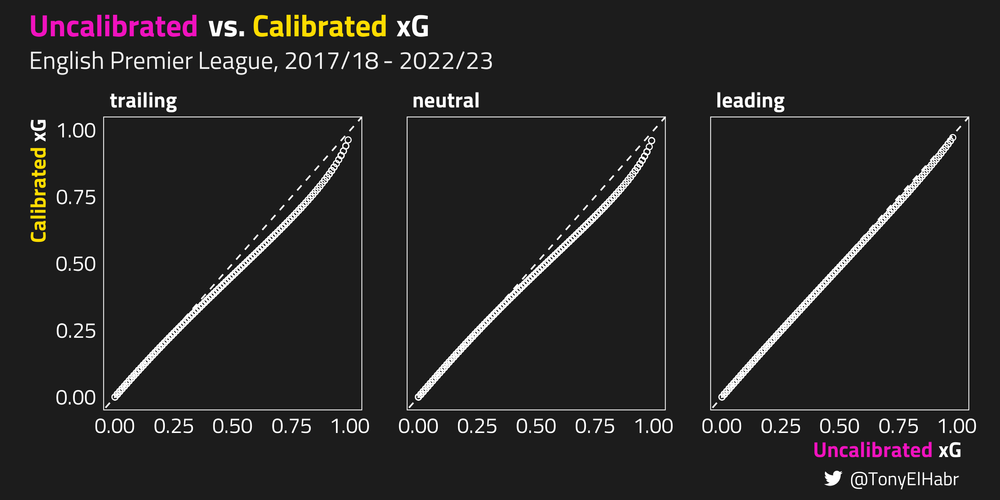

library(dplyr)
shots |>
dplyr::select(
shot_id,
team,
player,
is_goal,
pre_shot_game_state,
.pred_yes, ## xg
.pred_no ## 1 - xg
)
#> # A tibble: 56,872 × 7
#> shot_id team player is_goal pre_shot_game_state .pred_yes .pred_no
#> <chr> <chr> <chr> <fct> <fct> <dbl> <dbl>
#> 1 0014076a-01 Arsenal Henri… no neutral 0.03 0.97
#> 2 0014076a-02 Arsenal Henri… no neutral 0.06 0.94
#> 3 0014076a-03 West Ha… Marko… no neutral 0.08 0.92
#> 4 0014076a-04 West Ha… Marko… no neutral 0.03 0.97
#> 5 0014076a-05 West Ha… Marko… yes neutral 0.05 0.95
#> 6 0014076a-06 Arsenal Aaron… no leading 0.11 0.89
#> 7 0014076a-07 Arsenal Nacho… yes trailing 0.6 0.4
#> 8 0014076a-08 West Ha… Micha… no neutral 0.07 0.93
#> 9 0014076a-09 West Ha… Felip… no neutral 0.07 0.93
#> 10 0014076a-10 Arsenal Shkod… no neutral 0.02 0.98
#> # ℹ 56,862 more rowsImproving Expected Points
r
soccer
Using Beta calibration to improve the accuracy of expected points in soccer
Introduction
This blog post demonstrates how to adjust expected goals (xG) to more accurately predict match points for soccer (football) teams. By applying a technique called calibration1, we can better align expected points (xPts) with teams’ actual performance.
If you don’t care at all about what “expected points” are or simply just want to see how to do such a model calibration with R and the {probably} package, feel free to skip past the “Introduction” section.
Expected Points
In a prior post, I showed how to calculate expected points (xPts) from expected goals (xG) for the beautiful game of soccer (football).
xG and xPts Definitions
- xG is the predicted probability that a shot will be a goal, based on contextual features like the distance of the shot from the goal.
- xPts is a number between 0 and 3 assigned to each team in a match estimated deterministically from the xG of each shot in the match. Teams that accumulate more xG than their opponents in the match are more likely to have xPts closer to 3.
One thing that is not traditionally accounted for with xG and, consequently, xPts, is game state, i.e. whether a team is in losing, drawing, or winning when some event (e.g. a shot) occurs. To account for this, we need to make xG “aware” of the game state.
We could add an input feature to the xG model. However:
- I’m not the creator of the xG model that I’ll be using, so I can’t actually do that.
- Further, and more importantly, I don’t think this is a good idea, based on conceptual integrity.
On the latter point–traditional xG models focus on more directly attributable factors such as player positioning and the intrinsic attributes of the shot itself; they remain agnostic to elements like player identity and weather conditions. Sure, we could improve an xG model by having a dummy variable for whether the shot taker is Lionel Messi, but doing so would be shifting away from the intention of a typical xG model.2
With that being said, when we’re applying xG for a separate task, such as for calculating xPts, accounting for game state feels valid. We can do so with a second model that “calibrates” the output of the original model. In this context, we’d aim to align the xG model’s output with the actual goal conversion rate, taking into account the game state.3
So let’s dive in.
Analysis
Data
We’ll be using data from FBref, which gets its xG from Opta. We’ll limit the scope to the 2017/18 through 2022/23 seasons for the English Premier League. This post isn’t about data collection, so I’ll skip those details.
Here’s a glance at the data frame I’m working with. Note that there is one row per shot.
shots Data Dictionary
While several of these columns should be self-explanatory, e.g. team and player, some could use an explanation:
Let’s start by taking a look at the calibration of the Opta xG model, splitting by game state. (Note that this uses probably::cal_plot_breaks().)

Calibration Modeling
Now we train a model for calibration, grouping based on game state. (Well, really there are three models, one for each level of pre_shot_game_state.) I’ve opted for Beta calibration over alternatives like logistic calibration. Beta calibration tends to provide superior probability estimates, especially with skewed data like xG, where most values tend towards 0.
library(probably)
beta_cal_model <- probably::cal_estimate_beta(
shots,
truth = is_goal,
estimate = dplyr::starts_with('.pred'),
.by = pre_shot_game_state
)
beta_cal_model
#> ── Probability Calibration
#> Method: Beta calibration
#> Type: Binary
#> Source class: Data Frame
#> Data points: 56,872, split in 3 groups
#> Truth variable: `is_goal`
#> Estimate variables:
#> `.pred_no` ==> no
#> `.pred_yes` ==> yes
How
{probably} Implements Beta Calibration
At time of writing, this is implemented like so “under the hood”.
library(purrr)
library(betacal)
library(rlang) ## for .env and .data
purrr::map(
unique(shots$pre_shot_game_state),
function(pre_shot_game_state) {
filt_shots <- dplyr::filter(
shots,
.data$pre_shot_game_state == .env$pre_shot_game_state
)
betacal::beta_calibration(
p = filt_shots$.pred_no,
y = filt_shots$is_goal == 'no',
parameters = 'abm'
)
}
)As we can see, there’s just one dependent variable! After all, calibration is pretty straightforward–we leverage the original model output and the known target label to improve the model output.
Calibration Without a Grouping Variable
Taking one step back, I should note that we could achieve better model performance compared to raw xG without accounting for a “grouping” variable, e.g. game state. Indeed, this is what is typically meant with calibration. By definition, calibration is
\[ \hat{p} = \Pr(Y|\hat{p}) \tag{1}\]
where \(Y\) is the target variable of interest, and \(\hat{p}\) is the predicted probability of our classification model. (Note no exogenous variables.) Implementation-wise, we’d just take out the .by variable to our call to probably::cal_estimate_beta().
probably::cal_estimate_beta(
shots,
truth = is_goal,
estimate = dplyr::starts_with('.pred')
)With the fitted calibration models, let’s apply the Beta calibration procedure to our shots data set.
beta_cal_shots <- probably::cal_apply(
shots,
beta_cal_model
)Below is a plot that shows how the Beta calibration has adjusted the raw “uncalibrated” xG values.

Putting the calibrated xG along side the original xG in the calibration plot that we made earlier, we can see a slight visual improvement.

We could evaluate just how much the calibration has helped by calculating Brier Skill Score, for example, but quantifying improvement to xG is not our primary focus.
Revising Expected Points (xPts)
We set out to evaluate how we could improve xPts (which relies on xG), so let’s do that. I’ll spare the details of how to calculate xPts because I have a whole separate blog post on that.
Instead, let’s skip to evaluating
Code
compared_xpts_by_match_plot <- compared_xpts_by_match |>
ggplot2::ggplot() +
ggplot2::aes(
x = reg_xpts,
y = cal_xpts
) +
ggplot2::geom_point()TODO
There is evidence that the current score of a match effects shooting rate, but it’s not so clear that it has an effect on conversion probability.
Conclustion
So, we’ve shown that model calibration improves the accuracy of xPts. We achieved this by tuning xG with game state. Depending on the context, if one finds that a variable improves model performance when accounted for in a post-training calibration step. one might consider adding said variable as an additional feature for training. However, if one only has access to a model’s output, as we did here with xG, then calibration can be a really sound choice.
While I would not suggest that xG models should be modified to take game state as an additional feature since it would compromise the conceptual integrity of such a model, one might choose
“Why should accounting for game state create a more accurate set of xPts? Doesn’t xG already directly capture the fact that teams trailing in a match may be taking more, lower quality shots?” Well, there are at least two confounding factors that immediately come to mind:
- Players on the trailing team may be taking more off-balance or rushed shots that they would not otherwise take. Traditional xG model, which do not account for body pose or footedness, do not capture this kind of “desperateness”.
- Players on teams that fall behind their opponents tend to have less finishing skill. Lower finishing skill generally manifests in worse goal conversion rates. Thust, the xG of shots taken by such players may tend to overrate their actual number of goals scored.
A picture is worth a thousand words.
No matching items
Footnotes
This isn’t to discredit research conducted where player effects are modeled as part of xG—I actually really like doing that kind of thing when trying to tease out estimates of player skill. However, for the sole purpose of quantifying the innate quality of a shot, adding inputs that aren’t directly related to the attributes of a shot, such as game state, feel unjustified, even if they would improve model performance.↩︎
You could also calibrate the output of a model to achieve marginal gains when there are no external factors you want to account for.↩︎
I’ve found that
{probably}needs a column for both the probability of “success” and “failure”, hence the seeming redundancy between.pred_yesand.pred_no. More broadly, these column names should correspond with{.pred}_{level1}and.pred_{level2}for binary classification, where the target variable has factor levels{level1}and{level2}. ({tidymodels}expects the target variable to be a factor.)↩︎I intentionally emphasize that the game state feature is with respect to the score prior to the outcome of the shot. It would be easy to calculate game state based on the score after the outcome of a shot, but that would be “leaking” information that could artificially enhance the model calibration.↩︎